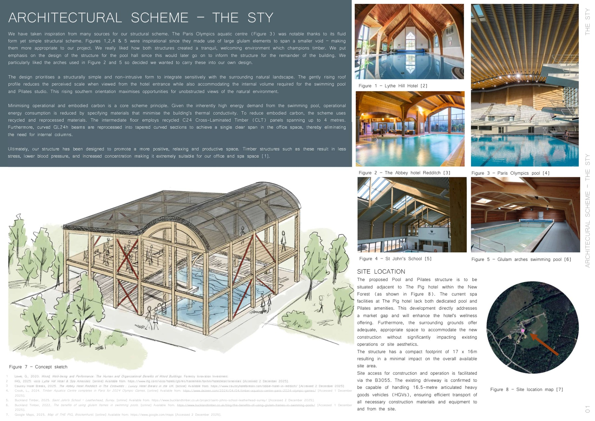
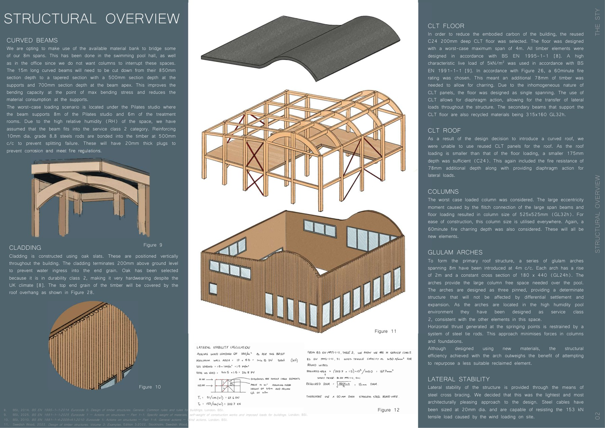

My role
Group design submission with Daniel contributing to the engineering development and technical presentation of the scheme.
Academic - Group 6
Group 6 structural scheme submission for a pool and Pilates building
Group 6 submission for a proposed pool and Pilates building. The opening pages set out the site context, concept, and structural scheme, including curved timber beams and CLT floor elements.
Group design submission with Daniel contributing to the engineering development and technical presentation of the scheme.
Preview pages
Selected pages from the document set to give a quick view of the calculation or report format. Click any image to open a full-screen view.



Project documents
The files below form the project document set. They can be opened directly or viewed in-browser using the embedded PDF frame.
Group 6 submission covering the structural scheme for a pool and Pilates building.
In-browser viewing
Use the tabs below to switch documents. The active PDF can always be opened in a new tab with the button beside the viewer.
{kind=link}
{kind=link}